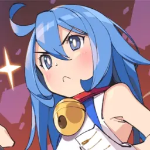

B站用户：ドラAもん对于一部作品的粉丝来说，喜欢这部作品不需要理由，也很难说出理由，因此只能向大家分享一下，这部作品的“与众不同”，以及作为一个粉丝的心路历程。
刀剑神域系列的原作者川原砾曾说过，自己在构思一部小说的时候，常常是先想出一个很棒的“点”，再根据这个点的剧情来铺展开一整个故事，而他在2002年应征电击文库小说大赏时所构思的这篇《刀剑神域》的那个“点”，正是黄昏之中的艾恩葛朗特，以及远处互相依偎着的桐亚二人，而事实上，这一幕也成了看完通篇的观众们通常最喜欢的一个镜头。（此外，在他之后2005年左右所创作的alicization篇中的末尾，同样有这样的一个镜头，为避免剧透，请大家2020年5.6月左右通过观赏那部分的动画来发现吧）
在现在的我们看来，所谓“VR”概念已经丝毫不陌生了，“RPG”“异世界”等等概念也被大量使用在了如今的动漫作品之中，但却很少能够再有一幕这样深入人心的场景，使得《刀剑神域》这部作品无法被替代，这部作品能够被我们喜欢到今天，也大多源于此。
对一部作品的评价，不需要踩一捧一，也不需要藏着掖着，让国内大批的观众第一次领略到画笔所勾勒出的这个“二次元”的世界（当年如此，如今“二次元”这个词都变味了呢（笑）是如此的美好，正是对它最好的评价，而这或许是很多“神作”都无法做到的壮举。
大量列举客观的数字，因为不想在主观判断上跟黑子费口舌，某些执着的黑子甚至可以写出整篇的文字来证明他们黑得对，却也无法改变这些数字。当然在他们眼里客观的数字也等于没有，因为唯独他是孤高的智者，我等凡人皆是冥顽不化的韭菜（笑
“这虽然是游戏，但可不是闹着玩的”——五星献给它带给我们的感动。